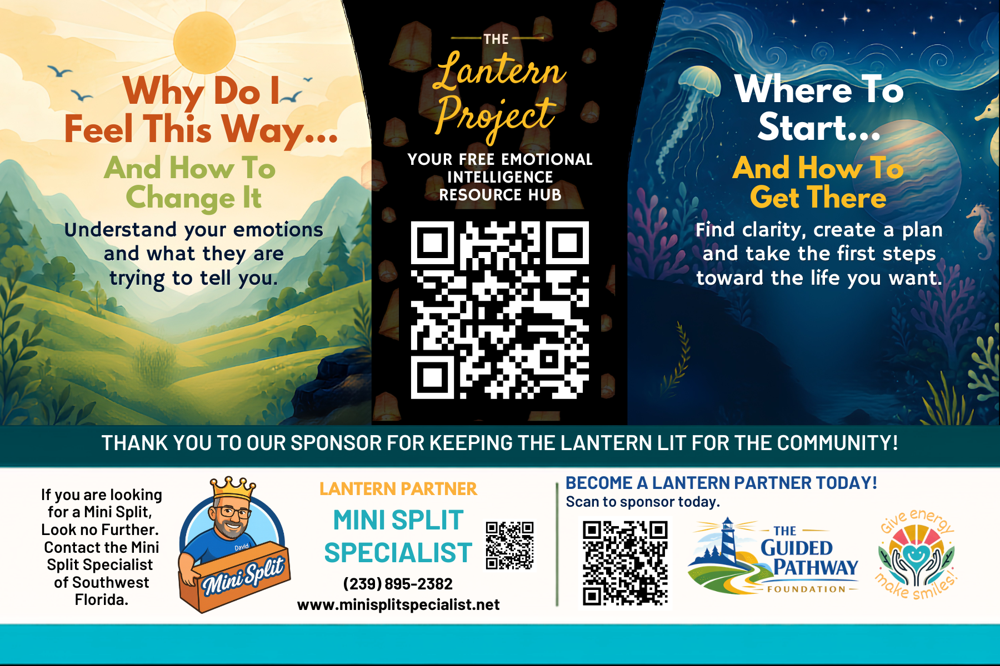
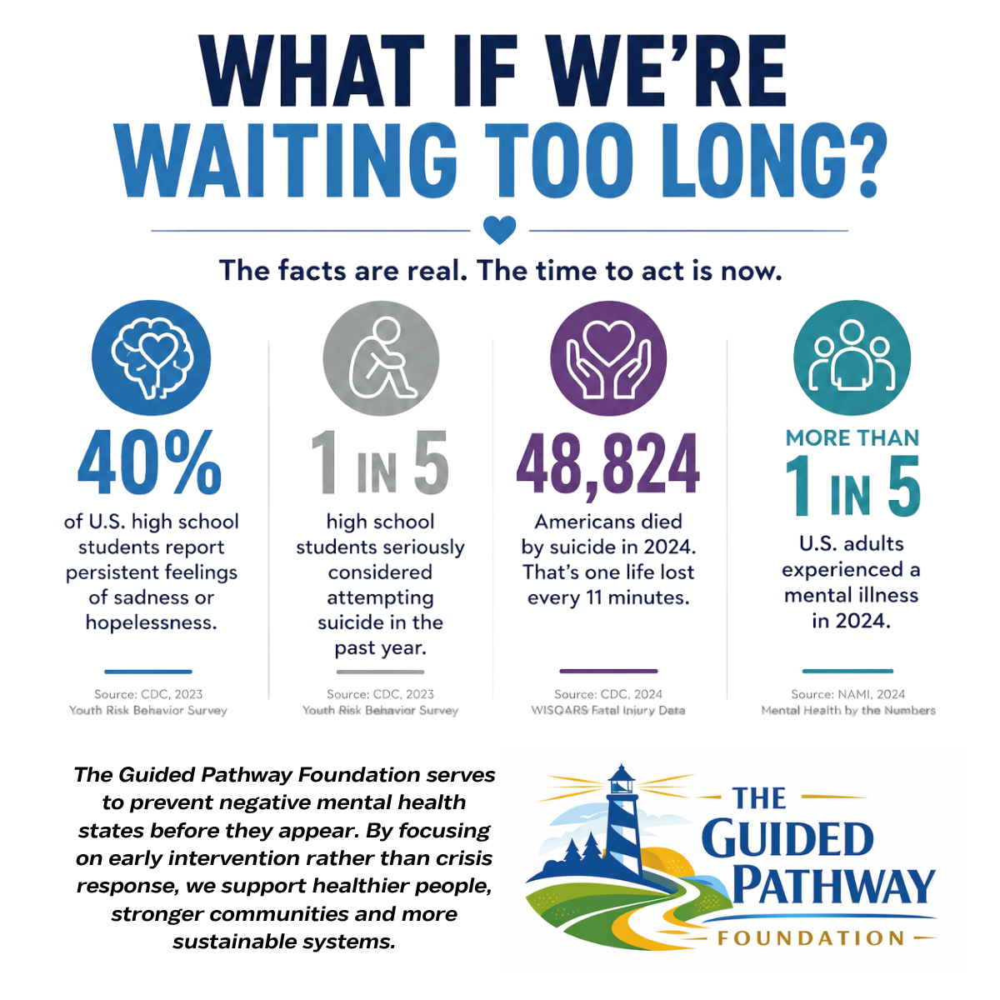
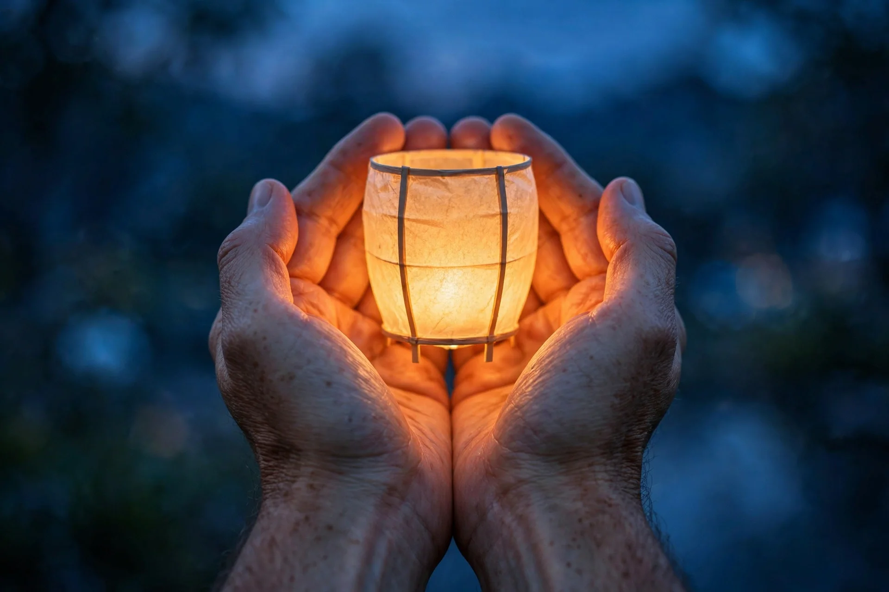
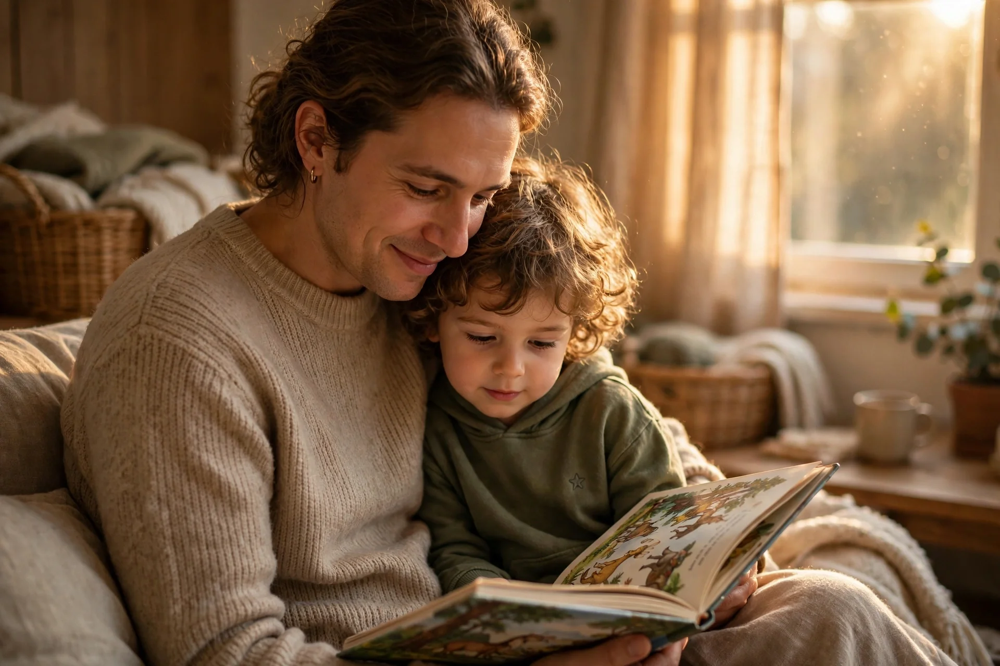
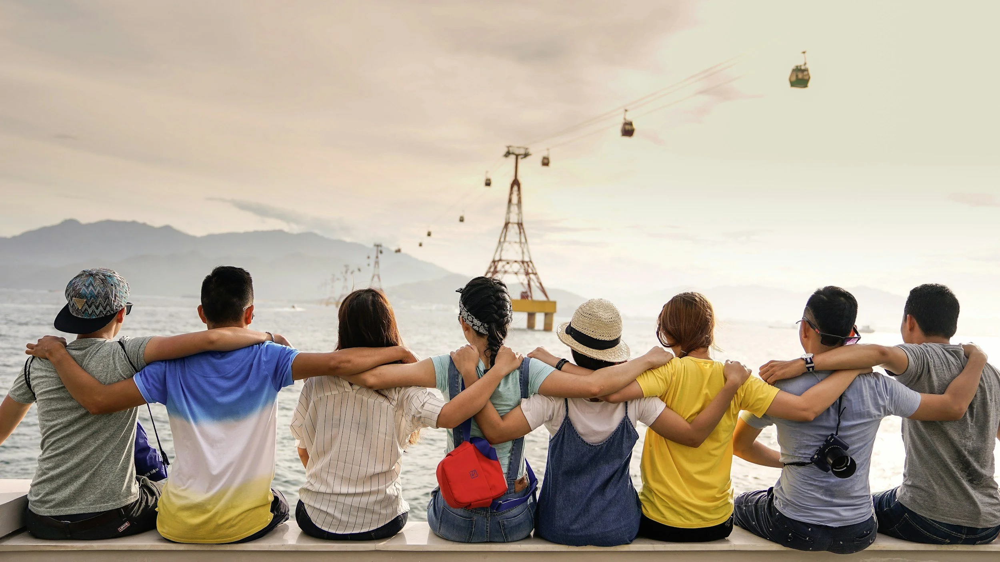

The Lantern Project
A small resource can be the first step toward something bigger. Free emotional intelligence tools for families and communities, available right now at lantern.theguidedpathwayfoundation.com.
Emotional Tools Before the Moment Becomes a Crisis
The Lantern Project is a community based emotional wellness initiative of The Guided Pathway Foundation designed to place practical emotional intelligence tools directly into the hands of individuals and families.
Through free resource magnets distributed throughout local communities, individuals can scan a QR code and immediately access guided tools that help them identify what they are feeling, better understand their emotions, develop healthy coping strategies, and determine what steps they can take next.
There is no cost to access the resources, no account required, and no need to already know what kind of help you are looking for.
Sometimes people do not need another pamphlet telling them where to go. They need help understanding where to begin.

Give People Emotional Tools Before the Moment Becomes a Crisis

Emotional distress does not always begin as a crisis. It can begin with a child who does not know how to explain what they are feeling. A parent who feels overwhelmed. A teenager who feels hopeless but does not know how to talk about it. An adult who knows something is not right but does not know what their next step should be.
The Lantern Project is built around a simple idea: give people emotional tools before the moment becomes a crisis.
By making emotional intelligence resources free, approachable, and easy to access within everyday community spaces, we help individuals recognize emotions earlier, strengthen coping skills, communicate what they need, and feel more prepared to seek additional support when necessary.
The Resource Stays Available Until the Moment Someone Needs It
Unlike a flyer that may be read once and discarded, Lantern Project magnets are designed to remain visible and accessible in homes and community spaces.
One magnet can potentially serve a child, parent, caregiver, teenager, friend, or visitor whenever they need it.
The resource stays available until the moment someone needs it.

Scan the Magnet. Open the Tools.
Community partners, including schools, caregiver organizations, healthcare providers, and employers, share Lantern Project materials with the families and individuals they serve. Each card or magnet covers one practical topic, like understanding emotions or knowing where to start, and its QR code opens a fuller digital guide for anyone who wants to go deeper.
The full library of guided tools lives in the free Lantern resource hub, open to everyone with no cost and no account.
Made for Everyone Who Wants a Steadier Inner Life
- Parents and caregivers looking for practical ways to support their children's emotional growth
- Teens and young adults navigating big feelings
- Educators and counselors who want resources ready to use
- Community organizations and employers investing in the wellbeing of the people they serve

One Lantern at a Time
The Lantern Project is made possible through businesses, organizations, donors, sponsors, and volunteers who believe emotional wellness resources should be accessible to everyone.
Community sponsorships help fund the production and distribution of Lantern Project magnets while allowing resources to remain completely free for the people receiving them.
Together, we can place practical emotional tools into more homes and communities: one lantern at a time.

Strengthening What Protects Us
The CDC identifies positive coping skills, strong social connections, stable relationships, and supportive environments among factors associated with positive mental health. For children and adolescents, strengthening protective factors during critical developmental stages can be especially important.
The Lantern Project helps bring this prevention focused approach into the community by making emotional intelligence education available wherever people already live, work, learn, gather, and receive services.
If Your Organization Serves Families, Partner With Us
If your organization serves families in Southwest Florida, partner with us to bring Lantern Project materials to the people you reach. Distribution partnerships, event collaboration, and sponsorship opportunities are all available.
Keep the Lanterns Burning
Your gift funds the production and distribution of Lantern Project magnets, keeping every resource completely free for the people who receive them. Donate through our Lantern specific giving form.